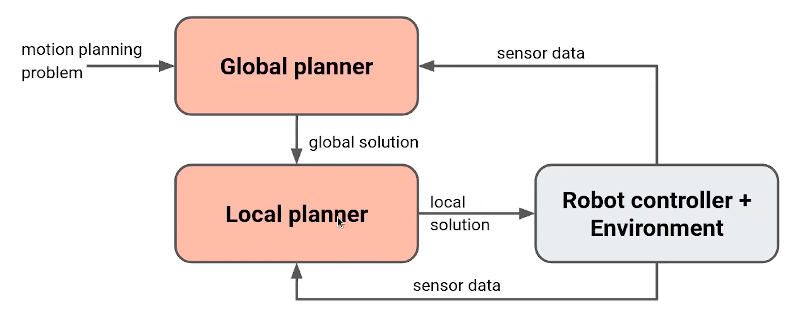
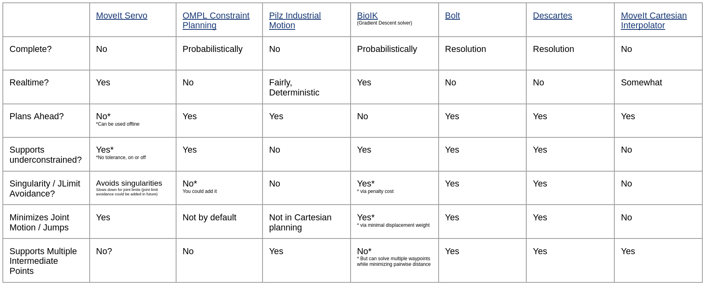

layout: true <div class="header"><img src="https://rosin-project.eu/wp-content/uploads/rosin_ack_logo_wide.png" style="background-color:transparent"/></div> <div class="footer"><img src="https://www.ipa.fraunhofer.de/content/dam/ipa/ipa.svg" /><p>© Fraunhofer IPA</p></div> <div class="triangle"></div> --- # MOVEIT --- ## MoveIt Capabilities - Motion Planning - Generate high-degree of freedom trajectories through cluttered environments and avoid local minima - Manipulation - Analyze and interact with the environment with grasp generation - Inverse Kinematics - Solve for joint positions for a given pose, even in over-actuated arms - Control - Execute time-parameterized joint trajectories to low level hardware controllers through common interfaces - 3D Perception - Connect to depth sensors and point clouds with Octomaps - Collision Checking - Avoid obstacles using geometric primitives, meshes, or point clouds --- ## Timeline  --- ## Why ROS 2 vs ROS 1? - Realtime capabilities now available - Designed for production - same support for R&D - Multi-platform: Linux, Windows, macOS --- ## Milestones - M1: Straight port to ROS 2 - Fully migrate existing packages to ROS 2 - Leverage ROS 2 features: build (ament), middleware, logging, parameters - M2: Real-time support - Reactive, closed-loop control to sensor input - Hybrid planning (global and local) - Zero-memory copy integration to controllers - M3: Fully leverage ROS 2 - Lifecycle management of MoveIt nodes - Leverage ROS 2 component nodes --- ## Real-time capabilities (Milestone 2) Realtime-safety is required for online robot manipulations: - Complex interactions with environment with forces, torques - Pushing, polishing, screwing - Enables: - Reactive Closed-loop control - High rate joint command streaming (e.g. >1 kHz) - Low latency and reliable sensor->control pipeline https://github.com/ros-planning/moveit2/issues/277 --- ## Improving MoveIt 1 with MoveItCpp Direct access to core MoveIt components - Support for multiple planning pipelines - Support for running multiple robots - More flexible configuration  --- ## Architecture (Milestone 3) Leverage ROS 2 component nodes for better performance  --- ## Hybrid Planning  https://github.com/ros-planning/moveit2/issues/300 --- .cols[ .fifty[ ### Global Planning - Pros - Plan around complex obstables - Avoid getting stuck in local minima - Complete: **will** find solution if exists - Cons - Slower computation time - Not Real-time - Not deterministic ] .fifty[ ### Local Planning - Pros - Fast / reactive - Deterministic - Well suited for visual servoing - Cons - Gets stuck in local minima - Fewer collision safety guarantee ] ] --- ## Key Concepts   --- ## Key Concepts #### Robot State - contains geometry information and joint values #### Current State Monitor - update robot state by subscribing to `/joint_states` (provided by driver) #### Planning Scene - collision checking and constraints checking #### Planning Scene Monitor - updates planning scene through ROS interfaces #### Controller Interface - planning trajectories published using [`FollowJointTrajectory`](http://docs.ros.org/api/control_msgs/html/action/FollowJointTrajectory.html) (consumed by driver) <!-- https://ros-planning.github.io/moveit_tutorials/doc/planning_scene_monitor/planning_scene_monitor_tutorial.html --> --- ## MoveIt configurations #### URDF - Universal Robot Decsription Format - safety controller - meshes used for collision checking - [UR5 description](https://github.com/ros-industrial/universal_robot/blob/kinetic-devel/ur_description/urdf/ur5.urdf.xacro) #### SRDF - Semantic Robot Description Format - Joint group (collection of joints and links) - as joints, links or serial chain - Virtual and passive joints - Robot poses - Self-collision - [UR5 SRDF](https://github.com/ros-industrial/universal_robot/blob/kinetic-devel/ur5_moveit_config/config/ur5.srdf) #### Other configurations - joint limits, kinematicas and motion planning plugins <!-- http://docs.ros.org/kinetic/api/moveit_tutorials/html/doc/urdf_srdf/urdf_srdf_tutorial.html --> --- ## MoveItCpp API ```cpp // \brief load the robot model, // configure the planning pipeline from ROS 2 parameters and // initialize defaults moveit_cpp_ = std::make_shared<moveit::planning_interface::MoveItCpp>(node_); // \brief associated to a planning group // used to setup the motion plan request and // call the low-level planner moveit::planning_interface::PlanningComponent arm("ur5_arm", moveit_cpp_); /** \brief Set the goal constraints generated from target pose and robot link */ geometry_msgs::PoseStamped target_pose1; target_pose1.header.frame_id = "base_link"; target_pose1.pose.orientation.w = 1.0; target_pose1.pose.position.x = 0.28; target_pose1.pose.position.y = -0.2; target_pose1.pose.position.z = 0.5; arm->setGoal(target_pose1, "ee_link"); /** \brief Set the goal constraints generated from a named target state */ arm->setGoal("ready"); ``` --- ## Constraint planning Used to - constrain robot motion - define planning goals ```cpp kinematic_constraints::JointConstraint kinematic_constraints::OrientationConstraint kinematic_constraints::PositionConstraint kinematic_constraints::VisibilityConstraint ``` https://www.youtube.com/watch?v=qEketOee7_g --- ## Constraint planning e.g. Planning with Path Constraints specified for a link on robot ```cpp moveit_msgs::OrientationConstraint ocm; ocm.link_name = "panda_link7"; ocm.header.frame_id = "panda_link0"; ocm.orientation.w = 1.0; ocm.absolute_x_axis_tolerance = 0.1; ocm.absolute_y_axis_tolerance = 0.1; ocm.absolute_z_axis_tolerance = 0.1; ``` set this a path constraint for the planning group ```cpp moveit_msgs::Constraints test_constraints; test_constraints.orientation_constraints.push_back(ocm); move_group_interface.setPathConstraints(test_constraints); ``` --- ## Cartesian planning - end effector follows an exact path along a surface (welding and painting applications) - list of waypoints specified for the end-effector to go through - MoveIt! now supports real-time & global, collision-aware cartesian planning #### Desirable properties - Completeness, Underconstrained, Planning ahead, Realtime  https://picknik.ai/cartesian%20planners/moveit/motion%20planning/2021/01/07/guide-to-cartesian-planners-in-moveit.html --- ## Cartesian planning ```cpp std::vector<geometry_msgs::Pose> waypoints; waypoints.push_back(start_pose); geometry_msgs::Pose way_pose; waypoints.push_back(way_pose); way_pose.position.y -= 0.2; waypoints.push_back(way_pose); // right way_pose.position.z += 0.2; way_pose.position.y += 0.2; way_pose.position.x -= 0.2; waypoints.push_back(way_pose); // up and left ``` now compute trajectory with interpolation ```cpp moveit_msgs::RobotTrajectory trajectory; const double jump_threshold = 0.0; const double eef_step = 0.01; double fraction = move_group_interface.computeCartesianPath(waypoints, eef_step, jump_threshold, trajectory); ``` https://ros-planning.github.io/moveit_tutorials/doc/move_group_interface/move_group_interface_tutorial.html#cartesian-paths --- ## Getting involved https://github.com/ros-planning/moveit2 - Adding New Features - Helping with MoveIt 2 Port - Financial contributions via code sprints and grants - Enhancing Documentation - Reporting & Fixing Bugs --- # Thank you! ### Main maintainers: PickNik Robotics picknik.ai Boulder, Colorado 80302 @picknikrobotics